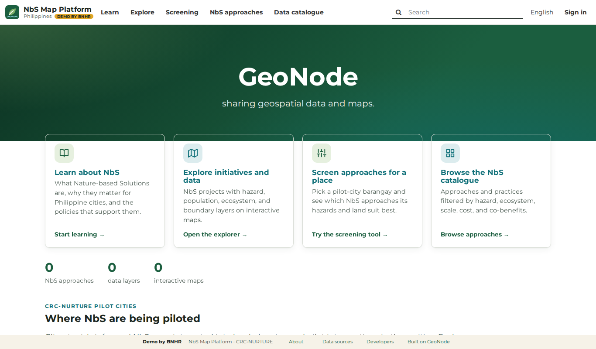
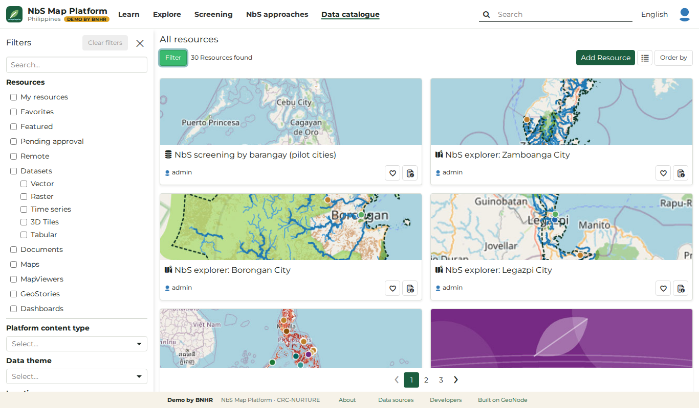
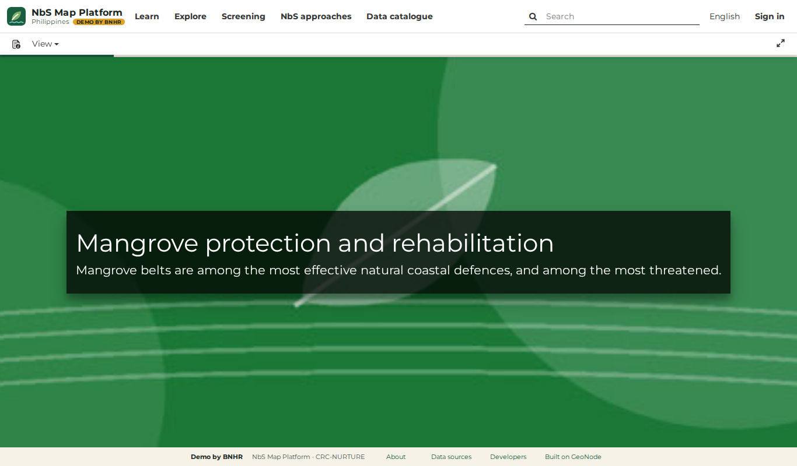
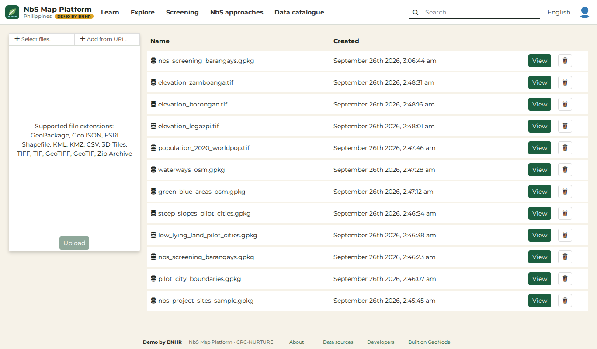
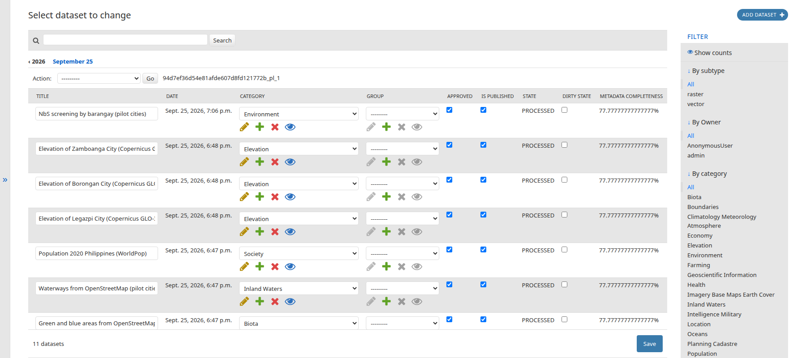
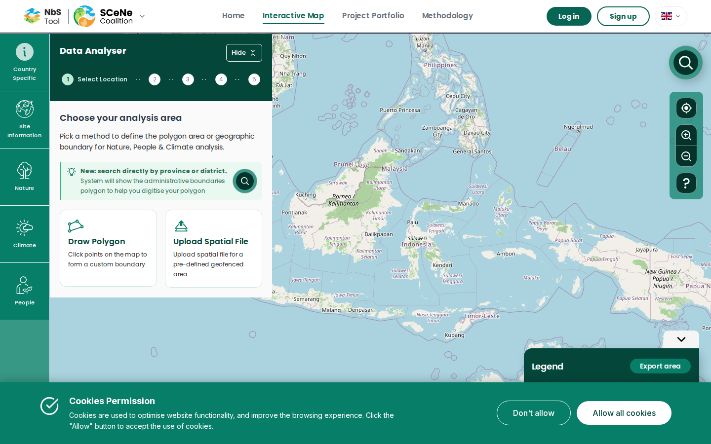
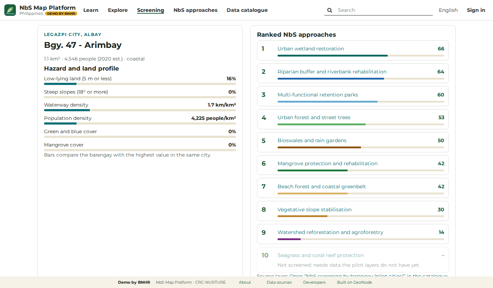

<!-- .slide: class="title-slide" data-background-color="#091A31" --> <img src="logo-full-darkbg.png" class="title-logo" alt="BNHR"> <p class="project-context">BNHR, platform developer</p> # Use what works.<br>Build what <em>matters</em>. <p class="subtitle">Consultation Workshop on the National NbS Web Platform · 21 October 2026</p> <p class="url">less lock-in. more <em>know-how</em>.</p> --- <!-- OUTLINE (the common opening, both sessions: 9:45 with CRS and DENR, 13:35 with the NbS Support Network) About 15 minutes of slides (1 to 15), then SCeNe and its steps (16 to 18), the live tour on Borongan (19), and the activity: its title (20) and how it works (21 to 24). The build adds slide 1 from the frontmatter; this comment sits in slide 2 because the build needs the frontmatter first. 1. [title] Use what works. Build what matters. With the tagline. 2. [content, table] Workshop design: time (AM, PM), session topic and objectives, method, materials, person-in-charge, for BNHR's two hours. 3. [content] We have four months, so we don't start from scratch: today, beta 1 Dec 2026, version 2 1 Feb 2027, handover 24 Feb 2027. 4. [content + screen] GeoNode is a ready-made map platform that governments already use (demo home page). 5. [content, sticker grid] GeoNode already does most of what the platform needs: ten site-map and terms-of-reference items marked GeoNode does this (green), we can do this (yellow), we build this (blue). 6. [content + screen] Finding, opening and downloading map information comes ready-made (demo catalogue). 7. [content, QR] We already have a working demo: demo-pcp4nbs.bnhr.xyz, with a QR code. 8. [section] Three things we'll set up together. 9. [content + screen] Information pages can get their own addresses and an easy editor (Django flat pages, to test). 10. [content + screen] Projects can come in through a simple spreadsheet (template; FFP joins them into one national map). 11. [content + screen] You choose who checks before anything goes public (a GeoNode setting). 12. [content] What do you think? Three quick questions on pages, projects and checking. 13. [content, steps] Most people will come for the Interactive Map, our NbS tool: its four steps from the draft user journey, in blue. 14. [two-column] So we build the NbS tool, and use GeoNode as it comes. 15. [content] Today, we decide four things together: how to build the tool, what comes first, what map information it needs and who has it, how we work together. 16. [content + screen] We start from a good example: SCeNe's NbS tool. 17. [content, steps] SCeNe's tool has five steps; ours adds one (recommended NbS approaches). 18. [content + screen] Our added step recommends NbS approaches for a place (demo recommendation for a Legazpi barangay). 19. [section, QR] Let's look at it on Borongan, with a QR code to SCeNe's interactive map. The live tour follows. 20. [section, QR] Build our NbS tool: the activity, with a QR code to bnhr.xyz/workshops/2026-10-21-nbs-tool-builder. 21. [content] Each table builds the tool for one person: the five people. 22. [content, cards] For every card, choose one: keep (up to 38 of the 50 cards, across all steps), maybe, we don't need it, we wish it had. 23. [content, two-column] Last, the data the tool needs: need it, why, can you share it, where is it; 10 data dots. 24. [section, QR] Now it's your turn. Into the activity, with a QR code to How it works on the activity website. --> <link rel="stylesheet" href="brand-2026.css"> ## Workshop *design*. <table class="design"> <thead><tr><th>Time <span>AM/PM</span></th><th>Session topic & objectives</th><th>Method</th><th>Materials</th><th>Person-in-charge</th></tr></thead> <tbody> <tr><td>9:45–10:10<br><span class="sep">---</span><br>13:35–14:00</td><td><b>Why GeoNode, and what we build</b><br>Know what GeoNode already does, what we set up, and what we build</td><td>Talk, demo, live tour of SCeNe's tool</td><td>Slides, demo site, SCeNe's tool</td><td>BNHR</td></tr> <tr><td>10:10–10:35<br><span class="sep">---</span><br>14:00–14:25</td><td><b>Rounds 1–2: Choose a place, What's there</b><br>Choose what our person needs</td><td>Show, try, build</td><td>Workshop website on each table's laptop; phones if you like</td><td>BNHR, FFP table hosts</td></tr> <tr><td>10:35–10:45<br><span class="sep">---</span><br>14:25–14:35</td><td><b>Break</b></td><td></td><td>Snacks</td><td>FFP</td></tr> <tr><td>10:45–11:15<br><span class="sep">---</span><br>14:35–15:05</td><td><b>Rounds 3–5: Threats, What NbS could work, Take it home and keeping it running</b></td><td>Show, try, build</td><td>Workshop website</td><td>BNHR, FFP table hosts</td></tr> <tr><td>11:15–11:30<br><span class="sep">---</span><br>15:05–15:20</td><td><b>What matters most</b><br>Agree on the top cards and wishes</td><td>15 card dots per table; read-back of all tables' results</td><td>Workshop website, results on the big screen</td><td>BNHR</td></tr> <tr><td>11:30–11:45<br><span class="sep">---</span><br>15:20–15:35</td><td><b>Data and working together</b><br>Which data the tool needs, and who can share it</td><td>"Data we need" tab, 10 data dots</td><td>Workshop website</td><td>FFP, BNHR</td></tr> </tbody> </table> Note: This is how the next two hours run, in the morning from 9:45 and in the afternoon from 13:35. First I'll explain why we build on GeoNode and what we build ourselves, and we'll look at SCeNe's tool together. Then the activity, in five rounds: in each one I show a step, you can try it on your phone if you like, and your table builds its version of the tool on its board, on the workshop website. A break in the middle. Then we agree on what matters most, looking at all the tables' results together on the big screen, and we finish with the data the tool needs and how we work together. (Morning: this includes how the platform should work with DENR's CCIMS, before FFP's segment on DENR's data.) Online participants do exactly the same on their own computers, with their own host. --- ## We have four months, so we don't start *from scratch*. <div class="dates"> <div class="date-card today"><div class="when">21 Oct</div><div class="year">2026</div><div class="what">Today</div></div> <div class="date-card"><div class="when">1 Dec</div><div class="year">2026</div><div class="what">Beta: a first version to try</div></div> <div class="date-card"><div class="when">1 Feb</div><div class="year">2027</div><div class="what">Version 2</div></div> <div class="date-card handover"><div class="when">24 Feb</div><div class="year">2027</div><div class="what">Handover</div></div> </div> Note: Good morning (good afternoon). I'm from BNHR, and I'm building the platform with FFP. Before we get to the fun part, I want to share how we're thinking about the work, because it shapes everything we ask you today. Here are the three dates that set our pace. The beta is due on 1 December, about six weeks from today. Version 2 comes on 1 February, and we hand over on 24 February. That's about four months from today to handover. In four months there's no time to build a platform from nothing, test it and train people on it. So we start from something that already works. --- ## GeoNode is a ready-made map platform that *governments* already use. <div class="split"> <ul> <li>Made for storing, finding and sharing map information</li> <li>Free and open: no licence to buy or renew</li> <li>Used by governments and agencies for their national map information</li> <li>DENR can keep it running after the project</li> </ul> <div class="shot-col"> <div class="screenshot-container"><p></p></div> <p class="slide-source">Screen: NbS Map Platform demo by BNHR, built on GeoNode</p> </div> </div> Note: That something is GeoNode. Think of it as a ready-made platform for map information. It's free and open, so nobody has to buy or renew a licence, and governments and agencies already use it for their national map information. That matters for the handover. When the project ends, DENR keeps a platform that others already run, rather than something only one company understands. On the right is our demo, which already runs on GeoNode. You'll see more of it later. --- ## GeoNode already does *most* of what the platform needs. <div class="cov"> <div></div><div class="head green">GeoNode does this</div><div class="head yellow">We can do this</div><div class="head blue">We build this</div> <div class="item">Find map information in a catalogue</div><div class="cell"><span class="dot green"></span></div><div class="cell"></div><div class="cell"></div> <div class="item">Store it and share it</div><div class="cell"><span class="dot green"></span></div><div class="cell"></div><div class="cell"></div> <div class="item">Download it, or open it in other map software</div><div class="cell"><span class="dot green"></span></div><div class="cell"></div><div class="cell"></div> <div class="item">Maps to explore</div><div class="cell"><span class="dot green"></span></div><div class="cell"></div><div class="cell"></div> <div class="item">Dashboards for reports</div><div class="cell"><span class="dot green"></span></div><div class="cell"></div><div class="cell"></div> <div class="item">User accounts and organisation pages</div><div class="cell"><span class="dot green"></span></div><div class="cell"></div><div class="cell"></div> <div class="item">Information pages: NbS 101, Learn More</div><div class="cell"></div><div class="cell"><span class="dot yellow"></span></div><div class="cell"></div> <div class="item">Checking projects before they go public</div><div class="cell"><span class="dot green"></span></div><div class="cell"></div><div class="cell"></div> <div class="item">Adding projects from a simple spreadsheet</div><div class="cell"></div><div class="cell"><span class="dot yellow"></span></div><div class="cell"></div> <div class="item tool">The Interactive Map: our NbS tool</div><div class="cell"></div><div class="cell"></div><div class="cell"><span class="dot blue"></span></div> </div> Note: This is the terms of reference and the draft site map, side by side with what GeoNode already does. It's the same as the stickers on the poster on the wall. Green means GeoNode does it as it comes: a catalogue to find map information, storing and sharing it, downloads, maps to explore, dashboards for the reports, user accounts, where each organisation in the Network can have its own page, and a check before anything goes public. Yellow means we can do it with a little setup on top of GeoNode. There are two: the information pages, and adding projects. I'll show you how in a minute. Blue is the one thing we build: the Interactive Map, the NbS tool. --- ## Finding, opening and downloading map information comes *ready-made*. <div class="split wide-shot"> <ul> <li>Search and filter by hazard, NbS approach, ecosystem and more</li> <li>Download it, or open it in QGIS or ArcGIS</li> <li>DENR's own systems can read it too</li> </ul> <div class="shot-col"> <div class="screenshot-container"><p></p></div> <p class="slide-source">Screen: NbS Map Platform demo by BNHR, built on GeoNode</p> </div> </div> Note: Here's what green looks like. This is the catalogue in our demo. One search covers everything on the platform: map information, maps, stories, dashboards and documents. The filters on the left include the NbS ones, such as hazard, NbS approach and ecosystem. Anyone can download what they're allowed to, and technical staff at DENR and partner organisations can open the same map information straight in QGIS, ArcGIS or their own systems, including DENR's CCIMS. One caution: a few datasets have licences that don't allow sharing copies, so for those we switch downloads off. None of this needed development. It comes with GeoNode. --- ## We already have a *working demo*. <div class="split qr-split"> <div class="text-col"> <p class="address-bar">demo-pcp4nbs.bnhr.xyz</p> <ul> <li>Built on GeoNode, with map information for Legazpi, Borongan and Zamboanga</li> <li>Try the catalogue, the maps and the NbS recommendations on your phone</li> <li>It's a sketch for today: some of its data is for illustration only</li> </ul> </div> <div class="qr-col"> <p class="qr-caption">Scan to open the demo</p> </div> </div> Note: Everything I've shown you so far is running today. This is our demo, built on GeoNode with map information for the three pilot cities. Scan the code if you'd like to follow along on your phone, now or during the activity. It's a sketch for this workshop, not the final platform: the NbS project sites and the recommendation table in it are for illustration only. Tell us what's wrong with it; that's what it's for. --- <!-- .slide: class="section-slide" data-background-color="#0c2340" --> <span class="section-label">We can do this</span> # Three things we'll set up *together*. Note: Now the yellow stickers, and one green one where you get to choose. These are places where GeoNode works a bit differently from what we'd draw on a blank page. Each has a way forward, and for each I'd like your view. --- ## Information pages can get their own addresses and an *easy editor*. <div class="split"> <div class="text-col"> <p class="kicker"><span class="dot yellow"></span>We can do this · 1 of 3</p> <ul> <li>Today, NbS 101 and Learn More are GeoNode stories, with addresses that Google can't find one by one</li> <li>GeoNode is built on Django, which has simple text pages with their own address and a word-processor-like editor</li> <li>We'll test these for NbS 101, Learn More and About</li> </ul> </div> <div class="shot-col"> <p class="address-bar">…/catalogue/#/geostory/<b>13</b></p> <div class="screenshot-container"><p></p></div> <p class="slide-source">Screen: NbS Map Platform demo by BNHR, built on GeoNode</p> </div> </div> Note: First, the information pages: NbS 101, Learn More, About. In the demo they're GeoNode "stories". A story mixes text, pictures and live maps, and the people who run the platform can write one in the browser without a developer. Two things we want to improve. Every story lives at an address like this one, ending in a number GeoNode gives it, and Google sees them all as the same page, so people can't find a story straight from a search. And GeoNode itself has no simple page editor for plain text pages. GeoNode is built on Django, and Django has simple text pages, called flat pages, that each get their own address and can be edited in the back office with a word-processor-like editor. We'll test them for NbS 101, Learn More and About, and keep stories for pages that need live maps. --- ## Projects can come in through a *simple spreadsheet*. <div class="split"> <div class="text-col"> <p class="kicker"><span class="dot yellow"></span>We can do this · 2 of 3</p> <ul> <li>GeoNode takes a map file, or a spreadsheet with a location for each project</li> <li>We'll give Network members a spreadsheet template: one row per project</li> <li>FFP joins them into one national map of NbS projects, the one the NbS tool shows</li> </ul> </div> <div class="shot-col"> <div class="screenshot-container"><p></p></div> <p class="slide-source">Screen: NbS Map Platform demo by BNHR, built on GeoNode</p> </div> </div> Note: Second, adding projects. GeoNode's upload expects a map file, like a shapefile or a KML, or a spreadsheet with a latitude and longitude for each project. Most Network members don't make map files, and GeoNode has no form where you type in a project and click its place on a map. Each upload also becomes its own separate layer, so twenty organisations would mean twenty project maps. So we'll keep it simple: a spreadsheet template with one row per project and the same columns for everyone, which anyone with Excel can fill in. FFP joins the rows into one national map of NbS projects, and that's the map the NbS tool shows. (Afternoon) In the activity's "Data we need" tab, tell us what you have on your projects' locations: map files, a spreadsheet, barangay names, or maps inside reports. --- ## You choose *who checks* before anything goes public. <div class="split wide-shot"> <div class="text-col"> <p class="kicker"><span class="dot green"></span>GeoNode does this · 3 of 3</p> <ul> <li>A contributor uploads a project</li> <li>Someone who runs the platform checks it, then it goes public</li> <li>It's a setting: we can change who checks, or switch it off</li> </ul> </div> <div class="shot-col"> <div class="screenshot-container"><p></p></div> <p class="slide-source">Screen: where approvals happen, NbS Map Platform demo by BNHR</p> </div> </div> Note: Third, a choice for you. In the demo, when a Network member uploads a project, it doesn't go public straight away: someone who runs the platform checks it first. That protects against mistakes and keeps DENR-only information private. This is a GeoNode setting, not a fixed rule. We can decide who checks, for example each organisation for its own projects, or FFP for everything, or switch the check off. Whoever checks will own that job after handover. --- ## What do *you* think? <div class="live-list"> <div><span class="dot yellow"></span>Pages: would simple text pages work for NbS 101 and Learn More?</div> <div><span class="dot yellow"></span>Projects: could your organisation fill in a spreadsheet of its projects?</div> <div><span class="dot green"></span>Checking: who should check projects before they go public?</div> </div> Note: Three quick questions, by show of hands and a few voices. Pages: would simple text pages, with their own address, be enough for NbS 101 and Learn More? Projects: could your organisation fill in a spreadsheet with one row per project? Checking: who should check a project before it goes public: FFP, DENR, or each organisation for its own? FFP records the answers on the poster. --- ## Most people will come for the *Interactive Map*, our NbS tool. <div class="steps" style="--n: 4"> <div class="step tool"><div class="n">1</div><div class="name">Choose a place</div><div class="what">Click a barangay, type a place, draw an area, or add a map file</div></div> <div class="step tool"><div class="n">2</div><div class="name">See what's there</div><div class="what">All the map information for that place, with any of it switched off</div></div> <div class="step tool"><div class="n">3</div><div class="name">Get recommended NbS approaches</div><div class="what">From the place's land and climate data, in the pilot cities</div></div> <div class="step tool"><div class="n">4</div><div class="name">Take it home</div><div class="what">A summary to download as a PDF</div></div> </div> <p class="steps-note">From the draft user journey for the platform.</p> Note: Now the blue sticker. The heart of the platform is the Interactive Map, the NbS tool. We expect most people to come to the platform for this. This is what the draft user journey asks it to do. Choose a place: click a barangay, type a place name, draw an area, or add a map file. See everything the platform knows about that place. Get recommended NbS approaches, starting with the pilot cities. And take home a summary as a PDF. GeoNode doesn't do any of this on its own. It can show maps, but it can't sum up a place across all its map information or recommend approaches. That's why this is the part we build. --- ## So we build the NbS tool, and use GeoNode *as it comes*. <div class="two-column"> <div class="column"> <div class="column-header"><span class="dot green"></span>GeoNode as it comes</div> <div class="chips"><span>Catalogue</span><span>Storage and sharing</span><span>Downloads</span><span>Maps</span><span>Stories</span><span>Dashboards</span><span>Accounts</span><span>Uploads with approval</span></div> </div> <div class="column build"> <div class="column-header"><span class="dot blue"></span>Where we build</div> <p class="big-line">The Interactive Map: the NbS tool</p> <p>It reads its map information from GeoNode, so everything is added, described and approved once.</p> </div> </div> Note: So this is the plan. Everything green and yellow, we use the way GeoNode comes, and we put our development time into the NbS tool. The two fit together. The tool reads its map information from GeoNode, so a dataset is added, described and approved once, in GeoNode, and then it shows up in the tool. If someone asks for something new outside the tool, our first answer will be to see what GeoNode already offers, so that the time goes where most people will feel it. --- ## Today, we decide four things *together*. <div class="purpose"> <div><span class="n">1</span><span class="t"><b>How we build the tool</b>Which steps, and what each step shows</span></div> <div><span class="n">2</span><span class="t"><b>What comes first</b>Not everything can be ready by 1 December</span></div> <div><span class="n">3</span><span class="t"><b>What map information it needs</b>And who has it</span></div> <div><span class="n">4</span><span class="t"><b>How we work together</b>So the tool fits the Philippines</span></div> </div> Note: Which brings us to why you're here. Not everything can be ready by 1 December, so today we need your help with four things. How we build the tool: which steps it has, and what each one shows. What comes first. What map information the tool needs, and who has it. Many of you hold exactly the data it needs. And how we'll work together after today so the tool really fits the Philippines. --- ## We start from a good example: *SCeNe's* NbS tool. <div class="split wide-shot"> <ul> <li>Built by the SCeNe Coalition for Southeast Asia</li> <li>Open to try, without signing in</li> <li>Its steps are close to what our draft asks for</li> </ul> <div class="shot-col"> <div class="screenshot-container"><p></p></div> <p class="slide-source">Screen: SCeNe Coalition NbS Tool (beta), nbstool-beta.scenecoalition.org</p> </div> </div> Note: We don't have to imagine the tool from a blank page. The SCeNe Coalition has built an NbS tool for Southeast Asia, and anyone can try it without signing in. Its steps are close to what our draft user journey asks for, so it's a good place to start. We're not copying it. We're using it as something concrete to point at: this we want, this we don't need, this we wish it had. --- ## SCeNe's tool has five steps; ours *adds one*. <div class="steps" style="--n: 6"> <div class="step"><div class="n">1</div><div class="name">Choose a place</div><div class="what">Search, draw or upload an area</div></div> <div class="step"><div class="n">2</div><div class="name">What's there</div><div class="what">Land, nature, people, climate</div></div> <div class="step"><div class="n">3</div><div class="name">Threats</div><div class="what">What's been lost or disturbed</div></div> <div class="step ours"><div class="n">Ours</div><div class="name">Recommended NbS approaches</div><div class="what">For a place, from its data</div></div> <div class="step"><div class="n">4</div><div class="name">Pathway</div><div class="what">Protect, manage or restore</div></div> <div class="step"><div class="n">5</div><div class="name">Benefits</div><div class="what">What the chosen pathway could bring</div></div> </div> Note: Here are SCeNe's five steps. Choose a place. See what's there: land, nature, people and climate. Look at the threats: how much has been lost or disturbed. Choose a pathway: protect, manage or restore. And see the potential benefits. Ours follows the same idea and adds one step that SCeNe doesn't have: recommended NbS approaches for a place, here in orange. --- ## Our added step recommends *NbS approaches* for a place. <div class="split wide-shot"> <ul> <li>Uses the place's land, hazard and climate data</li> <li>Starts with the pilot cities</li> <li>Points to what else to weigh: people, gender, biodiversity</li> </ul> <div class="shot-col"> <div class="screenshot-container"><p></p></div> <p class="slide-source">Screen: an early version in the NbS Map Platform demo by BNHR (Bgy. 47 Arimbay, Legazpi City)</p> </div> </div> Note: This is an early version of that step in our demo, for a barangay in Legazpi. On the left is the place's profile: low-lying land, slopes, waterways, people. On the right, NbS approaches ranked for that barangay. In the draft, the recommendation comes from a matrix of the place's physical and climate data, and it starts with the pilot cities, not the whole country. It also points to other things to weigh, like socio-economic and gender factors and biodiversity, and links to how to design your NbS. What goes into that matrix is something we'll work on with you. --- <!-- .slide: class="section-slide" data-background-color="#0c2340" --> <span class="section-label">Live tour · SCeNe NbS Tool</span> # Let's look at it on *Borongan*. <div class="qr-corner"> <p class="qr-caption"><span class="nw">nbstool-beta.scenecoalition.org/</span><wbr><span class="nw">interactive-map</span></p> </div> Note: Let's see SCeNe's tool on a place we know: Borongan, one of our pilot cities. Scan the code to follow along on your phone. Switch to the browser: https://nbstool-beta.scenecoalition.org/interactive-map Tour: draw an area around Borongan City and confirm its size (about 4,100 ha). Site Characterisation: the General, Nature, People and Climate tabs. Threat Profile. Pathway Selection. What to point out for Borongan: the search finds provinces and cities, not barangays; it rated the area "no risk" for flood; it's built for forests, mangroves and peatlands, while our pilot cities need coastal, river and urban green areas; and Pathway Selection had no activities for this site, so it couldn't calculate the benefits. Come back to the deck after the tour. --- <!-- .slide: class="section-slide" data-background-color="#0c2340" --> <span class="section-label">The activity</span> # Build our *NbS tool*. <div class="qr-corner"> <p class="qr-caption"><span class="nw">bnhr.xyz/workshops/</span><wbr><span class="nw">2026-10-21-nbs-tool-builder</span></p> </div> Note: Now it's our turn to build. Starting from SCeNe's steps, each table builds its own version of the NbS tool for the Philippines. Scan the code for the activity's website. Its first page, How it works, explains every step for participants and for table hosts. Every table builds there: open "Build our tool" on your table's laptop, and your host will help you start. The card guide on the same site has every card with its picture and an explanation, and the people you can build for. If you're joining online, you do the same on your own computer. --- ## Each table builds the tool for *one person*. <div class="people-row"> <div class="person"><div class="pname">Ana</div><div class="prole">City planner in Borongan</div></div> <div class="person"><div class="pname">Jun</div><div class="prole">Technical officer at DENR-CCS</div></div> <div class="person"><div class="pname">Liza</div><div class="prole">Keeps the platform up to date</div></div> <div class="person"><div class="pname">Rosa</div><div class="prole">Runs an NGO's mangrove project</div></div> <div class="person"><div class="pname">Paolo</div><div class="prole">Student researcher</div></div> </div> At every card, ask: *would our person use this?* Note: Each table builds the tool for one person. Their stories are on the website, in the card guide and on your board when you choose them. They're made up, but their work is real: Ana has to tell the city council which barangays flood and which nature-based solutions could help; Jun needs the national picture; Liza keeps the platform running after launch; Rosa wants her organisation's mangrove project on the national map; Paolo is looking for data for a thesis. If none of them is like you, build for someone like you. Building for one person stops a table from wanting everything for everyone. --- ## For every card, choose *one*. <div class="qcards four"> <div class="qcard keep"><div class="band">Green</div><div class="q">Keep it</div><div class="sub">Up to 38 of the 50 cards, across all steps.</div></div> <div class="qcard maybe"><div class="band">Blue</div><div class="q">Maybe</div><div class="sub">Not sure? It doesn't count either way.</div></div> <div class="qcard skip"><div class="band">Grey</div><div class="q">We don't need it</div><div class="sub">Our person wouldn't use this.</div></div> <div class="qcard wish"><div class="band">Orange</div><div class="q">We wish it had…</div><div class="sub">What information would it need? Who has it?</div></div> </div> Note: You've now seen the tool. For every card, choose one of these. Green: keep it. But you can keep only 38 of the 50 cards, counted across all the steps together, so keeping means choosing. Keep more in the steps that matter most to your person; your board shows how many keeps you have left, and you can change a Keep to Maybe to free one up. Blue: maybe, when you're not sure; it doesn't count either way. Grey: we don't need it; our person wouldn't use it. Orange: a wish, for something missing. For every wish, add what information it would need and who has it. That's how a wish turns into something we can build. At the end, each table gets two kinds of priority dots: 15 card dots for the kept cards and wishes that matter most, and 10 data dots for the data. --- ## Last, the *data* the tool needs. <div class="two-column"> <div class="column"> <div class="column-header">For each kind of data</div> Do we need it? Why? Can your organisation share it? If not, where is it? </div> <div class="column"> <div class="column-header">Then</div> 10 data dots for the data the tool needs most. </div> </div> Note: The tool can only show what it has data for. The "Data we need" tab lists sixteen kinds of data, from official hazard maps to existing NbS projects, with who we think holds each. Correct us. For each one: do we need it, why, can your organisation share it, and if not, where is it? Then give your 10 data dots to the data the tool needs most. --- <!-- .slide: class="section-slide" data-background-color="#0c2340" --> <span class="section-label">Next: the activity</span> # Now it's *your* turn. <div class="qr-corner"> <p class="qr-caption"><span class="nw">bnhr.xyz/workshops/</span><wbr><span class="nw">2026-10-21-nbs-tool-builder/</span><wbr><span class="nw">index.html</span></p> </div> Note: That's the framing. Let's get to work. (Explain the activity and hand over to the table hosts.)